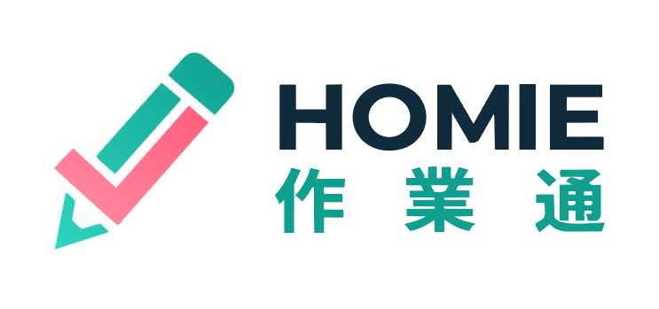

上傳作業照片
拍照可連續按多次累加頁面 · 或拖曳圖片至此
自動判斷
數學
國語
英語
生活/自然
🕐 最近紀錄 ▾
上傳繪本照片
中文、英文繪本都可以，會自動判斷 · 自動去除頁碼等雜訊
🕐 最近紀錄 ▾

拍張照，AI 逐題批閱附解說；繪本拍下來，自動唸給孩子聽。免費、不用註冊、照片不經任何伺服器。
放大題目、說明和故事文字，方便孩子自己看。
解題說明的深淺、繪本陪讀的講解，會依年級調整。
換聲音時會唸一句範例給你聽。
依 API 回傳的用量和公告單價估算（匯率以 32 計），不含 AI 語音；實際金額以供應商帳單為準。
錯題本只存在這支手機的瀏覽器裡，清除瀏覽器資料就會消失。換手機或清資料前，先匯出備份。
Homie ・更新紀錄
用手指在照片上拉出要保留的範圍；不拉就整張保留。